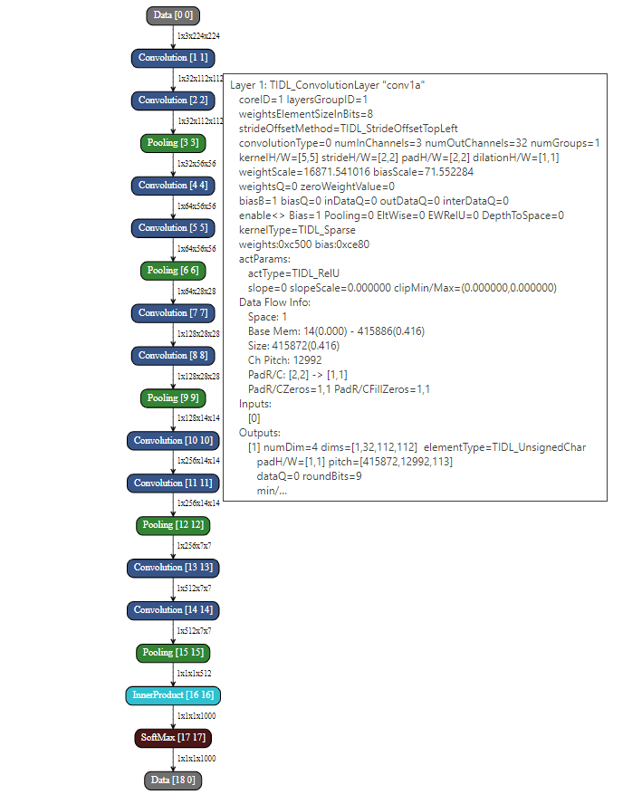

Introduction
TIDL-RT provides Graph Visualization Utility (hereafter called as GraphViz) for representing the imported network as a graph.
Purpose
- GraphViz allows the user to visually analyze the imported network along with various layer parameters like kernel dimensions, stride, padding, etc.
- GraphViz uses different background colors in order to distinguish among different layers.
- GraphViz contains some of the private information for different TIDL layers which can be useful for debug.
Directory Structure
GraphViz utility's source code is present at below path in TIDL package::
├── ti_dl # Base Directory
│ ├── utils # Utils Directory
│ │ ├── tidlModelGraphviz # GraphViz Tool
Example Output
- Below section demonstrates the GraphViz utility's output for JacintoNet11v2 network.
- GraphViz utility output is expected to be generated at the same location where network output binary file as mentioned by outputNetFile parameter in TIDL-RT import config file.
- As an example after importing the jacintonet11v2 model its GraphViz output is expected to be present inside ti_dl/test/testvecs/config/tidl_models/caffe/tidl_net_jacintonet11v2.bin.svg file.
- User can get details about each layer by hovering the mouse pointer over the individual layer bounding box.
- Each layer bounding box contains two identifiers: [layerIdx, dataIdx], where layerIdx indicates the order in which a particular layer is executed and dataIdx is a unique number associated with each layer's output buffer to uniquely identify it.
- Note that layer level traces generated by setting writeTraceLevel = 1 in TIDL-RT import and infer config files is always in terms of dataIdx. User can use this information to report any issue

TIDL GraphViz Output - JacintoNet11v2
 1.8.14
1.8.14